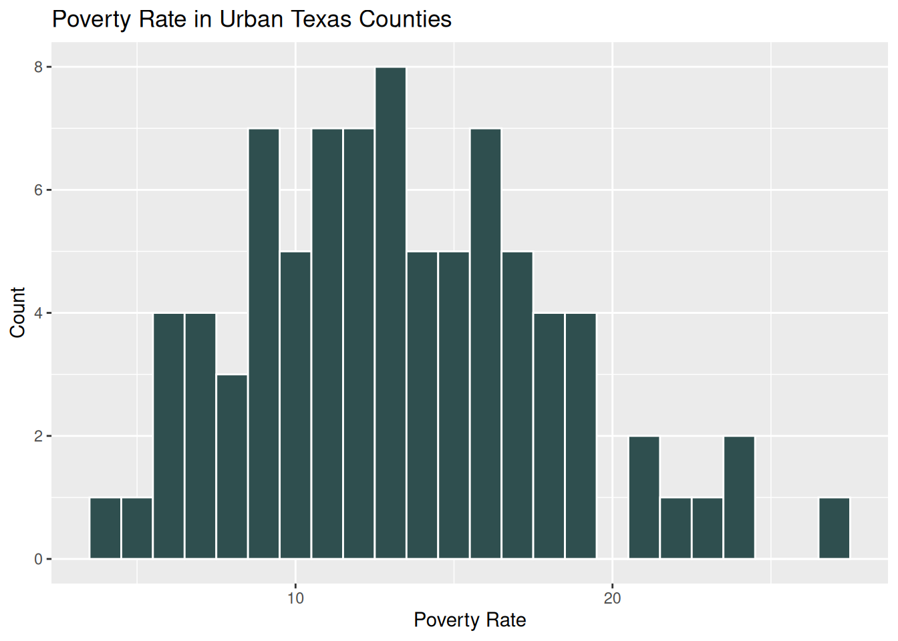

# Get Census Data ####
# census_api_key("[Insert your Census API key here]")
# Here are the variable names and descriptions we are collecting:
# DP05_0005E Estimate!!SEX AND AGE!!Total population!!Under 5 years
# S1701_C02_001E Estimate!!Percent below poverty level!!Population for whom poverty status is determined"
# S2301_C04_001E Estimate!!Unemployment rate!!Population 16 years and over"
# B03002_001E Estimate!!Total:
# B03002_003E Estimate!!Total:!!Not Hispanic or Latino:!!White alone
# B03002_004E Estimate!!Total:!!Not Hispanic or Latino:!!Black or African American alone
# B03002_005E Estimate!!Total:!!Not Hispanic or Latino:!!American Indian and Alaska Native alone
# B03002_006E Estimate!!Total:!!Not Hispanic or Latino:!!Asian alone
# B03002_007E Estimate!!Total:!!Not Hispanic or Latino:!!Native Hawaiian and Other Pacific Islander alone
# B03002_008E Estimate!!Total:!!Not Hispanic or Latino:!!Some other race alone
# B03002_009E Estimate!!Total:!!Not Hispanic or Latino:!!Two or more races:
# B03002_012E Estimate!!Total:!!Hispanic or Latino:
## Population Under 5 ####
pop04 <- get_acs(geography = "county",
variables = "DP05_0005",
state = "texas",
year = 2023) %>%
rename(pop04 = estimate,
pop04_moe = moe,
county = GEOID) %>%
select(county, pop04, pop04_moe)
## Poverty ####
poverty <- get_acs(geography = "county",
variables = "S1701_C03_001",
state = "texas",
year = 2023) %>%
rename(poverty_rate = estimate,
poverty_rate_moe = moe,
county = GEOID) %>%
select(county, poverty_rate, poverty_rate_moe)
## Unemployment ####
unemploy <- get_acs(geography = "county",
variables = "S2301_C04_001",
state = "texas",
year = 2023,) %>%
rename(unemployment_rate = estimate,
unemployment_rate_moe = moe,
county = GEOID) %>%
select(county, unemployment_rate, unemployment_rate_moe)
## Race/Ethnicity ####
total_pop <- get_acs(geography = "county",
variables = "B03002_001",
state = "texas",
year = 2023,) %>%
rename(total_pop = estimate,
total_pop_moe = moe,
county = GEOID) %>%
select(county, total_pop, total_pop_moe)
white_pop <- get_acs(geography = "county",
variables = "B03002_003",
state = "texas",
year = 2023,) %>%
rename(white_pop = estimate,
white_pop_moe = moe,
county = GEOID) %>%
select(county, white_pop, white_pop_moe)
black_pop <- get_acs(geography = "county",
variables = "B03002_004",
state = "texas",
year = 2023,) %>%
rename(black_pop = estimate,
black_pop_moe = moe,
county = GEOID) %>%
select(county, black_pop, black_pop_moe)
ai_pop <- get_acs(geography = "county",
variables = "B03002_005",
state = "texas",
year = 2023,) %>%
rename(ai_pop = estimate,
ai_pop_moe = moe,
county = GEOID) %>%
select(county, ai_pop, ai_pop_moe)
asian_pop <- get_acs(geography = "county",
variables = "B03002_006",
state = "texas",
year = 2023,) %>%
rename(asian_pop = estimate,
asian_pop_moe = moe,
county = GEOID) %>%
select(county, asian_pop, asian_pop_moe)
nhpi_pop <- get_acs(geography = "county",
variables = "B03002_007",
state = "texas",
year = 2023,) %>%
rename(nhpi_pop = estimate,
nhpi_pop_moe = moe,
county = GEOID) %>%
select(county, nhpi_pop, nhpi_pop_moe)
other_pop <- get_acs(geography = "county",
variables = "B03002_008",
state = "texas",
year = 2023,) %>%
rename(other_pop = estimate,
other_pop_moe = moe,
county = GEOID) %>%
select(county, other_pop, other_pop_moe)
twoplus_pop <- get_acs(geography = "county",
variables = "B03002_009",
state = "texas",
year = 2023,) %>%
rename(twoplus_pop = estimate,
twoplus_pop_moe = moe,
county = GEOID) %>%
select(county, twoplus_pop, twoplus_pop_moe)
hisp_pop <- get_acs(geography = "county",
variables = "B03002_012",
state = "texas",
year = 2023,) %>%
rename(hisp_pop = estimate,
hisp_pop_moe = moe,
county = GEOID) %>%
select(county, hisp_pop, hisp_pop_moe)
#Join race/Ethnicity frames together
race_eth <- total_pop %>%
left_join(white_pop) %>%
left_join(black_pop) %>%
left_join(ai_pop) %>%
left_join(asian_pop) %>%
left_join(nhpi_pop) %>%
left_join(other_pop) %>%
left_join(twoplus_pop) %>%
left_join(hisp_pop)
# Create percentages of each race/ethnicity
race_eth <- race_eth %>%
mutate(perc_white = round((white_pop/total_pop)*100, digits = 1),
perc_black = round((black_pop/total_pop)*100, digits = 1),
perc_ai = round((ai_pop/total_pop)*100, digits = 1),
perc_asian = round((asian_pop/total_pop)*100, digits = 1),
perc_nhpi = round((nhpi_pop/total_pop)*100, digits = 1),
perc_other = round((other_pop/total_pop)*100, digits = 1),
perc_twoplus = round((twoplus_pop/total_pop)*100, digits = 1),
perc_hisp = round((hisp_pop/total_pop)*100, digits = 1)) %>%
select(county, total_pop, perc_white, perc_black, perc_ai, perc_asian, perc_nhpi, perc_other, perc_twoplus, perc_hisp)
## Join to create census_demo ####
census_demo <- pop04 %>%
left_join(race_eth) %>%
left_join(poverty) %>%
left_join(unemploy)DoeRSample
Purpose
I created this Quarto document as an informal demonstration some of my basic knowledge and skills using R for data cleaning and analysis.
Quarto/Rmarkdown Use
This Quarto document was created in the “Source View” rather than relying on the “Visual View” in order to further demonstrate my coding abilities.
This document begins with a code-chunk in which I library the necessary packages, but with include: false to avoid including the code and output in the resulting document.
In this document I will:
- Import several publicly available data sets of different types and via different methods
- Clean those data sets to create and maintain the variables I need
- Join data sets together
- Run some basic analysis
- Create and use a function
- Create some basic graphs using
ggplot2- Box plots
- Bar charts
- Scatter plots with regression lines
I will alternate between showing all code, all code and output, and just output within the document to display my current coding style in some places and simplify the output in others.
Import and Clean Data
Census Data
The following code chunk uses echo:true and output: false to show the code but suppress the output.
FIPS Codes
Texas county FIPS Codes were retrieved from the US Census Bureau website.
## FIPS Codes ####
## Read in FIPS codes so we can join frames (Downloaded from https://www.census.gov/library/reference/code-lists/ansi.html#cou)
fips <- read_delim("/home/hilary/Documents/R/RExample/countyfips.txt", col_names = TRUE, delim = "|")
fips <- fips %>%
mutate(county=paste(STATEFP, COUNTYFP, sep = "")) %>% ## Combine STATEFP and COUNTYFP for full FIPS code
rename(county_name = COUNTYNAME) %>%
select(county, county_name) %>%
mutate(county_name = str_to_upper(county_name)) ## To Upper case
##Join census demo with FIPS codes
census_demo <- census_demo %>%
left_join(fips)Urban/Rural Status
Rural Urban Continuum codes were retrieved from the USDA Economic Research Service.
## Urban and Rural status ####
## Read in urban/rural county (Downloaded from https://www.ers.usda.gov/data-products/rural-urban-continuum-codes)
urban <- read_xlsx("/home/hilary/Documents/R/RExample/Ruralurbancontinuumcodes2023.xlsx")
urban <- urban %>%
filter(State == "TX") %>%
mutate(urban_rural = case_when(RUCC_2023 < 4 ~ "Urban", ## < 4 is considered rural
RUCC_2023 >= 4 ~ "Rural")) %>% ## >= 4 is considered urban
rename(county = FIPS) %>% ## Rename to FIPS for joining
select(county, urban_rural)
## Join census demo with urban/rural info
census_demo <- census_demo %>%
left_join(urban)Texas Child Care Data
The Texas Child Care Data was retrieved from the Texas Open Data Portal.
# Child Care Data ####
## Open Child Care Data ####
## Downloaded from https://data.texas.gov/See-Category-Tile/HHSC-CCL-Daycare-and-Residential-Operations-Data/bc5r-88dy/about_data
cc <- read_csv("/home/hilary/Documents/R/RExample/HHSC_CCL_Daycare_and_Residential_Operations_Data_20250406.csv")
## Prepare for joining with census_demo. Requires County name to be uppercase without COUNTY word
cc <- cc %>%
mutate(county = "COUNTY") %>%
mutate(county_name=paste(COUNTY, county, sep = " ")) %>% ## Add " COUNTY" to end of county names for clean joining
mutate(case_when(county_name == "DEAFSMITH COUNTY" ~ "DEAF SMITH COUNTY",
TRUE ~ county_name )) %>%
select(!county)
##Join census_demo with child care data
df <- census_demo %>%
full_join(cc)
## Clean up Child Care data ####
## Remove non-traditional child care programs and combine registered and licensed child care homes as "Home"s
df <- df %>%
filter(OPERATION_TYPE != "Child Placing Agency" & OPERATION_TYPE != "General Residential Operation" & OPERATION_TYPE != "Listed Family Home") %>%
filter( is.na(CARE_TYPE) | (CARE_TYPE != "Before/After School Program" & CARE_TYPE != "School Age Program")) %>%
filter(TEMPORARILY_CLOSED != "YES") %>%
mutate(operation_type = OPERATION_TYPE) %>%
mutate(prov_type = case_when(operation_type == "Licensed Center" ~ "Center",
operation_type == "Registered Child-Care Home" ~ "Home",
operation_type == "Licensed Child-Care Home" ~ "Home")
)
## More cleaning.
ccset <- df %>%
select(county, perc_white, perc_black, perc_hisp, poverty_rate, unemployment_rate, county_name, OPERATION_ID, OPERATION_NAME, LOCATION_ADDRESS, ACCEPTS_CHILD_CARE_SUBSIDIES, HOURS_OF_OPERATION, DAYS_OF_OPERATION, TOTAL_CAPACITY, prov_type, total_pop, urban_rural, pop04) %>% ##Trim data set to variables we want
rename_with(tolower, .cols = everything()) %>% ## Rename to lowercase for easier typing
mutate(prov_type = as.factor(prov_type), ## Convert to factor
county_name = as.factor(county_name), ## Convert to factor
days_of_operation = as.factor(days_of_operation) ## Convert to factor
) %>%
mutate(hours_open = str_split_i(hours_of_operation, "-", 1), ## Isolate Opening Time
hours_close = str_split_i(hours_of_operation, "-", 2)) %>% ## Isolate Closing time
mutate(hours_close_hr = as.numeric(str_split_i(hours_close, ":", 1)), ## Isolate closing hour
hours_close_min = str_split_i(hours_close, ":", 2), ## Isolate closing minute = AM PM
hours_close_aft = str_split_i(hours_close, " ", 2)) %>% ## Isolate AM vs. PM
mutate(hours_close_min = as.numeric(str_split_i(hours_close_min, " ", 1))) %>% ## Isolate closing minute
mutate(hours_close_hrplus12 = hours_close_hr + 12) %>% ## Convert closing hour to 24-hour time (PM)
mutate(hours_close_hr24 = case_when(hours_close_aft == "PM" ~ hours_close_hrplus12, ## Use 24-hour PM time if PM
hours_close_aft == "AM" ~ hours_close_hr) ## Use 24-hour AM time if AM
) %>%
mutate(hours_close_hr24 = (hours_close_hr24*100)+hours_close_min) %>% ## Multiply by 100 so 12 hours becomes 1200
select(!c(hours_close_hr, hours_close_min, hours_close_hrplus12, hours_close_aft)) %>%
mutate(open_aft_6 = case_when(hours_close_hr24 > 1800 ~ 1, ## Open_aft_6 = 1 if open past 6 pm
TRUE ~ 0)) %>% ## Otherwise 0
mutate(open_wknd = case_when(str_detect(days_of_operation, "Sat") ~ 1, ## Open weekend = 1 if open Saturday
str_detect(days_of_operation, "Sun") ~ 1, ## or Sunday
TRUE ~ 0)) %>%
mutate(urban_rural = as.factor(urban_rural)) %>% ## Convert to factor
mutate(total_cap_home = case_when(prov_type == "Home" ~ total_capacity, ## Total capacity just for Homes
TRUE ~ 0),
total_cap_center = case_when(prov_type == "Center" ~ total_capacity, ## Total capacity just for Centers
TRUE ~ 0))Collapse to County-Level Values
Now I am going to use our clean and complete data set to collapse values to the county-level, so that we end with a data set containing one record per Texas County.
# Collapse to county-level values ####
sum <- ccset %>%
group_by(county_name) %>%
summarize(county_cap_sum = sum(total_capacity, na.rm = TRUE),
county_cap_mean = mean(total_capacity, na.rm = TRUE),
county_cap_n = sum(!is.na((total_capacity))),
county_home_n = sum(prov_type == "Home"),
county_center_n = sum(prov_type == "Center"),
perc_home = mean(prov_type == "Home", na.rm = TRUE),
perc_white = mean(perc_white, na.rm = TRUE),
perc_black = mean(perc_black, na.rm = TRUE),
perc_hisp = mean(perc_hisp, na.rm = TRUE),
total_pop = mean(total_pop, na.rm = TRUE),
unemployment_rate = mean(unemployment_rate, na.rm = TRUE),
poverty_rate = mean(poverty_rate, na.rm = TRUE),
total_pop = mean(total_pop, na.rm = TRUE),
open_wknd = sum(open_wknd, na.rm = TRUE),
open_aft_6 = sum(open_aft_6, na.rm = TRUE),
urban_rural = fmode(urban_rural, na.rm = TRUE), ## Keeps most common value... which is same across county
county_cap_home_sum = sum(total_cap_home, na.rm = TRUE),
county_cap_center_sum = sum(total_cap_center, na.rm = TRUE),
pop04 = mean(pop04)
) %>%
mutate(perc_cap_home = (county_cap_home_sum/county_cap_sum)*100,
pop_rank = rank(total_pop),
perc_pop04_cap = (county_cap_sum/pop04)*100,
total_pop1000 = total_pop/1000,
perc_home = perc_home*100) %>%
mutate(perc_pop04_cap = case_when(perc_pop04_cap > 100 ~ 100,
TRUE ~ perc_pop04_cap)) ## Cap at 100%. Note that very few child care providers operate at their full licensed capacity... In fact we estimate that on average they operate at 70% capacity. Just because they have the physical space for 100 kids doesn't mean they have any intention to care for 100 kids or are staffed to do so.
## Create a subsets of data that I may want to use
sum_50 <- sum %>% ## 50 most populated counties
filter(pop_rank > 189 & !is.na(total_pop))At this point, the data set looks like this:
# A tibble: 241 × 23
county_name county_cap_sum county_cap_mean county_cap_n county_home_n
<fct> <dbl> <dbl> <int> <int>
1 ANDERSON COUNTY 1367 97.6 14 1
2 ANDREWS COUNTY 698 116. 6 1
3 ANGELINA COUNTY 3924 103. 38 2
4 ARANSAS COUNTY 550 78.6 7 2
5 ARCHER COUNTY 256 51.2 5 0
6 ARMSTRONG COUNTY 51 25.5 2 1
7 ATASCOSA COUNTY 1111 69.4 16 3
8 AUSTIN COUNTY 1071 76.5 14 1
9 BAILEY COUNTY 186 46.5 4 0
10 BANDERA COUNTY 414 104. 4 0
# ℹ 231 more rows
# ℹ 18 more variables: county_center_n <int>, perc_home <dbl>,
# perc_white <dbl>, perc_black <dbl>, perc_hisp <dbl>, total_pop <dbl>,
# unemployment_rate <dbl>, poverty_rate <dbl>, open_wknd <dbl>,
# open_aft_6 <dbl>, urban_rural <fct>, county_cap_home_sum <dbl>,
# county_cap_center_sum <dbl>, pop04 <dbl>, perc_cap_home <dbl>,
# pop_rank <dbl>, perc_pop04_cap <dbl>, total_pop1000 <dbl>Analysis
Correlations
We can start by looking at some basic correlations between some of the numeric variables in our data set. We will start by testing the correlations between population size, number of child care providers, number of child care slots, proportion of the child care providers that are home-based providers, and the proportion of the population that belong to a few select race/ethnicity groups.
## Test Correlations
cor <- sum %>% ## Select a few continuous/percentage variables
select(total_pop, county_cap_n, county_cap_sum, perc_home, perc_white, perc_black, perc_hisp) %>%
filter(!is.na(total_pop)) %>%
correlation::correlation(include_factors = TRUE, method = "auto") %>%
select(Parameter1, Parameter2, r, df_error, p, Method, n_Obs)
kable(cor, format = "html", digits=3) %>%
kable_styling(font_size = 10)| Parameter1 | Parameter2 | r | df_error | p | Method | n_Obs |
|---|---|---|---|---|---|---|
| total_pop | county_cap_n | 0.992 | 237 | 0.000 | Pearson correlation | 239 |
| total_pop | county_cap_sum | 0.988 | 237 | 0.000 | Pearson correlation | 239 |
| total_pop | perc_home | 0.096 | 237 | 1.000 | Pearson correlation | 239 |
| total_pop | perc_white | -0.204 | 237 | 0.018 | Pearson correlation | 239 |
| total_pop | perc_black | 0.271 | 237 | 0.000 | Pearson correlation | 239 |
| total_pop | perc_hisp | 0.056 | 237 | 1.000 | Pearson correlation | 239 |
| county_cap_n | county_cap_sum | 0.993 | 237 | 0.000 | Pearson correlation | 239 |
| county_cap_n | perc_home | 0.101 | 237 | 1.000 | Pearson correlation | 239 |
| county_cap_n | perc_white | -0.214 | 237 | 0.012 | Pearson correlation | 239 |
| county_cap_n | perc_black | 0.262 | 237 | 0.001 | Pearson correlation | 239 |
| county_cap_n | perc_hisp | 0.065 | 237 | 1.000 | Pearson correlation | 239 |
| county_cap_sum | perc_home | 0.098 | 237 | 1.000 | Pearson correlation | 239 |
| county_cap_sum | perc_white | -0.195 | 237 | 0.027 | Pearson correlation | 239 |
| county_cap_sum | perc_black | 0.276 | 237 | 0.000 | Pearson correlation | 239 |
| county_cap_sum | perc_hisp | 0.037 | 237 | 1.000 | Pearson correlation | 239 |
| perc_home | perc_white | 0.022 | 237 | 1.000 | Pearson correlation | 239 |
| perc_home | perc_black | 0.083 | 237 | 1.000 | Pearson correlation | 239 |
| perc_home | perc_hisp | -0.058 | 237 | 1.000 | Pearson correlation | 239 |
| perc_white | perc_black | 0.060 | 237 | 1.000 | Pearson correlation | 239 |
| perc_white | perc_hisp | -0.938 | 237 | 0.000 | Pearson correlation | 239 |
| perc_black | perc_hisp | -0.380 | 237 | 0.000 | Pearson correlation | 239 |
Unsurprisingly, a county’s total population size (total_pop) is highly correlated with the total number of child care providers in the county (county_cap_n; r = 0.992, p< 0.001) and total number child care slots in the county (county_cap_sum; r = 0.988, p< 0.001). As population increases, child care supply increases.
Next we see that as a county’s total population increases, the percentage of White residents decreases (r = -0.204, p= 0.018) and the percentage of Black residents increases (r = 0.271, p < 0.001). However, a county’s population size is not significantly correlated with the percentage of Hispanic residents (r = 0.065, p= 1.000).
We can see below that even in urban Texas counties, a small percentage of the population identifies as Black.

Regression
Texas is a very large state, with 254 counties in all. Of these, two-thirds are considered rural counties, some of which have no licensed or register child child care providers that meet our inclusion criteria for the sample.
| Count | Percentage | |
|---|---|---|
| Rural | 168 | 66.14 |
| Urban | 86 | 33.86 |
As suggested from the bar plot below, much of the Texas population is concentrated in a few counties with large cities.

Within these counties, the total supply of child care slots generally aligns with the population of the county. However, it does appear that counties with a higher poverty rate may have slightly lower total child care capacity in comparison to the population size.

This raises the question of whether child care coverage may be lower in higher poverty areas, which we can test with linear regression. Next, I am going to create a function and use it to output regression results. I realize this function does not save much effort, but I wanted to demonstrate my ability to create and use my own function.
For the following analysis, I am using the variable perc_pop04_cap, which is meant to be a proxy child care coverage/availability in the county. I calculated perc_pop04_cap as (total number licensed capacity child care slots)/(Total population of children under 5 years) X 100, and top-coded this to 100%. It is important to note that most child care providers never operate at their full licensed capacity, which is determined based on physical space available to the operation. From previous research, we estimate that on average, Texas child care providers operate at approximately 70% of their total licensed capacity.
## Create functions for simple Regression output
regout <- function(data, formula, digits = 3){
mod <<- lm(formula, data = data) ## Run lm model
kable(tidy(mod), digits = digits, caption = {{formula}}) ## kable output
} | term | estimate | std.error | statistic | p.value |
|---|---|---|---|---|
| (Intercept) | 47.098 | 3.252 | 14.484 | 0.00 |
| poverty_rate | -0.204 | 0.200 | -1.017 | 0.31 |
The results indicate that poverty rate does not significantly predict child care availability in the full population of Texas counties. However, what we looked at before was the highest populated counties, which tend to surround urban areas. Let’s look at a graph showing how the association between child care availability and population differs by urban/rural status.
`geom_smooth()` using formula = 'y ~ x'
We can now test whether adding a county’s urban/rural designation and/or an interaction between urban/rural and poverty rate improve model fit.
| term | estimate | std.error | statistic | p.value |
|---|---|---|---|---|
| (Intercept) | 43.408 | 3.557 | 12.202 | 0.000 |
| poverty_rate | -0.109 | 0.202 | -0.542 | 0.588 |
| urban_ruralUrban | 6.491 | 2.665 | 2.436 | 0.016 |
| term | estimate | std.error | statistic | p.value |
|---|---|---|---|---|
| (Intercept) | 39.871 | 3.880 | 10.276 | 0.000 |
| poverty_rate | 0.114 | 0.225 | 0.506 | 0.613 |
| urban_ruralUrban | 21.558 | 7.362 | 2.928 | 0.004 |
| poverty_rate:urban_ruralUrban | -1.089 | 0.497 | -2.193 | 0.029 |
You can see from the likelihood ratio test below that adding an interaction between poverty rate and urban/rural status significantly improves model fit (p < 0.001). You can also see from the results above that interaction itself is significant (p = 0.029). Although poverty rate does not predict child care coverage in rural counties, in urban counties an increase in poverty rate by 1 percent is associated with a 1.09 percentage point decrease in child care coverage.
## Compare models
cap_pov_sum2 <- lm(perc_pop04_cap ~ poverty_rate + urban_rural, data= sum)
cap_pov_sum3 <- lm(perc_pop04_cap ~ poverty_rate + poverty_rate:urban_rural, data= sum)
lrtest(cap_pov_sum2, cap_pov_sum3)Likelihood ratio test
Model 1: perc_pop04_cap ~ poverty_rate + urban_rural
Model 2: perc_pop04_cap ~ poverty_rate + poverty_rate:urban_rural
#Df LogLik Df Chisq Pr(>Chisq)
1 4 -1045.2
2 4 -1047.0 0 3.7242 < 2.2e-16 ***
---
Signif. codes: 0 '***' 0.001 '**' 0.01 '*' 0.05 '.' 0.1 ' ' 1As you can see, the poverty rate within urban Texas counties varies considerably.

Summary
Results indicate, on average, urban Texas counties with higher poverty rates may have have lower overall child care availability for their early childhood population. Although licensed capacity is only a rough proxy of child care supply, and the population of children under 5 years is a rough proxy for child care demand, the results suggest the presence of inequity of child care coverage in urban Texas counties.